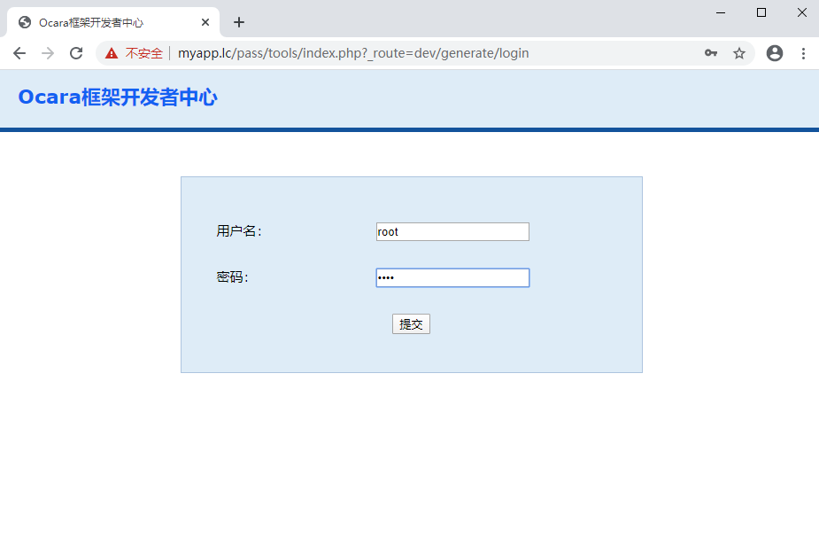

2.1 开发者中心介绍
Ocara框架新模块、建控制器、动作、模型和视图等，都要统一在开发者中心新建，最好不要去手动新建。 开发者中心，是独立于整个应用的。 注：生产环境应该禁止开发者中心，可以通过git等忽略掉开发者中心入口文件。开发者中心的使用
（1）开启开发模式 在application/config/system.php中，将SYSTEM_RUN_MODE改为'develop'。 应用上线在生产环境下，要将这个改为其他任意值即可。/* * 系统运行模式配置 * 分为开发模式和运营模式两种 * 配置为develop时是开发模式，其他均为运营模式 */ 'SYSTEM_RUN_MODE' => 'develop',（2）进入开发者中心 http://网站域名地址/pass/tools可进入开发者中心。默认用户名和密码都是root。  （3）开发者中心安全限制 考虑到部分开发者忘记在生产环境将系统运行模式修改为非开发模式，导致让非法者进入。 所以框架限制了IP访问白名单，默认是127.0.0.1。 其配置是toos/dev/config/base.php的LIMIT。/** * 访问开发者中心时校验IP和域名配置 */ 'LIMIT' => array( 'server_ips' => array('127.0.0.1'), //服务器IP白名单 'server_domains' => array('localhost'), //服务器域名白名单 ),（4）修改开发者中心代码 开发者中心模块是在tools/dev模块目录，里面代码您可以自由修改，不过核心服务类调用的是框架的建议尽量不要修改。